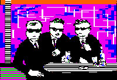

Jaromil's Musings

 printable page
printable page
printable page
printable page

Started in 1984 by Richard Stallman, with help by Eben Moglen and others, drafting the GNU General Public License, granting users the rights to:
Started in 2000 publishing low-consumption software creations for broadcasting and freedom of speech, granting users with the rights to:


The Laws of Free-Trade dictate that when you exchange money for the purchase of any item, that item belongs to you without strings attached.
Mobile communication objects sold worldwide are restricted. Such mobile communication devices constitute nowadays the widest network around the globe, mostly used by citizens for private communications.
1. For an extensive analysis on the topic see "The Next Idea of the Artist" essay by Rana Dasgupta (2008) published on the catalogue of the Liverpool Biennial
2. The Post-Futurist Manifesto. Franco Berardi, February 2009
Piracy does not simply exist because there are bloody-minded people who don't care for the rules and laws of the civilised world. It tends to emerge whenever there is a hegemonic power that asserts itself by establishing a trade monopoly. (Armin Medosh)
During the first decades of America's existence as a nation, private citizens, voluntary associations, and government officials encouraged the smuggling of European inventions and artisans to the New World. These actions openly violated the intellectual property regimes of European nations. (Doron Ben-Altar)
The Net as Artwork1:

Art production focuses on low-tech, critical thinking, re-use of existing infrastructures, circumventing limitations, remixing identities, trespassing borders and breaking open the box2 in a scenario of global, horizontal3 sharing of ideas and practices.
1. The Net as Artwork, Tatiana Bazzichelli, Costa e Nolan (it, 2006), Digital Aesthetics Research Center, Aarhus University (en, 2008)
2. Smash the Surface / Break Open the Box / Disrupt the Code, Eric Kluitenberg, ProContra / CFront (2000)
3. Peer-2-Peer


Jaromil's musings on http://jaromil.dyne.org/journal
R&D at the Netherlands Media Art Institute
Freaknet Medialab / Poetry Hacklab
Thanks, a thousand flowers will blossom!

|


|


|
 copyleft 2000 - 2009 dyne.org
foundation and respective authors. Verbatim copying
and distribution is permitted in any medium, provided
this notice is preserved.
Send inquiries & questions to dyne.org's hackers. copyleft 2000 - 2009 dyne.org
foundation and respective authors. Verbatim copying
and distribution is permitted in any medium, provided
this notice is preserved.
Send inquiries & questions to dyne.org's hackers.
|

|